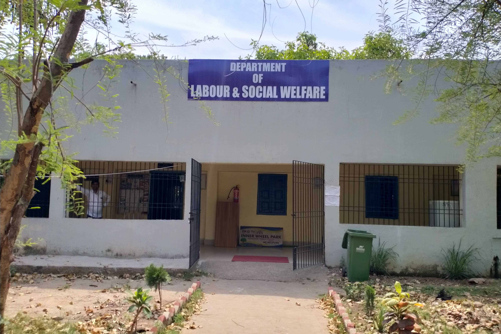

The Department of Labour and Social Welfare at Anugrah Narayan College, Patna is dedicated to the study and promotion of labor rights, social justice, and public welfare. Our mission is to provide students with academic excellence and practical knowledge in the fields of labor studies, human rights, and welfare policies.
This image represents the core spirit of the department—dedicated to fostering critical thinking, field-based learning, and building a socially aware student community. Our students actively participate in seminars, community outreach, and research initiatives, contributing to meaningful change in society.